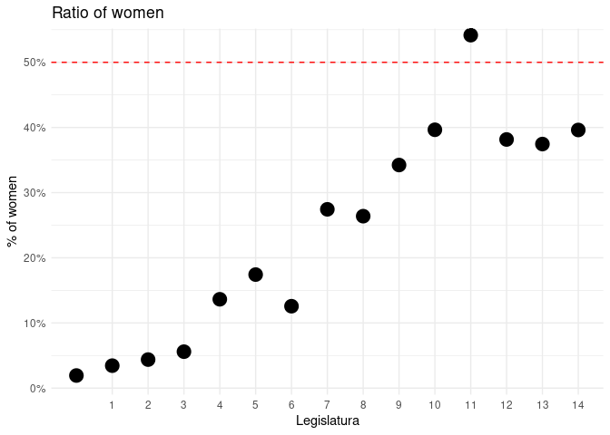

The goal of senadoRES is to provide information about the Senate of Spain. It uses the Open Data available and some other XML files I found while exploring the website.
Installation
You can install the released version of senadoRES with:
remotes::install_github("llrs/senadoRES")Example
To make it easier to work and show some data I’ll use some packages:
library("senadoRES")
library("dplyr")
#>
#> Attaching package: 'dplyr'
#> The following objects are masked from 'package:stats':
#>
#> filter, lag
#> The following objects are masked from 'package:base':
#>
#> intersect, setdiff, setequal, union
library("ggplot2")Senadores
This function return the members of the Senate:
ts <- senadores()
head(ts)
#> nombre apellidos legislatura ultCredencial procedTipo
#> 1 FERNANDO ABAD BÉCQUER 5 260 D
#> 2 ENRIQUE ABAD BENEDICTO 10 034 E
#> 3 ELISABET ABAD GIRALT 12 051 D
#> 4 JOSÉ ANTONIO ABAD LÓPEZ-BREA 3 039 E
#> 5 ADOLFO ABEJÓN ORTEGA 9 081 E
#> 6 FRANCISCO ABELLÁN MARTÍNEZ 9 242 D
#> procedLiteral procedLugar grupoCod
#> 1 Designado Asamblea de Madrid Asamblea de Madrid
#> 2 Electo Sevilla Sevilla
#> 3 Designada Parlamento de Cataluña Parlamento de Cataluña
#> 4 Electo Zamora Zamora
#> 5 Electo Valladolid Valladolid
#> 6 Designado Asamblea Regional de Murcia Asamblea Regional de Murcia
#> grupoSiglas grupoNombre sex
#> 1 800 GPS male
#> 2 800 GPS male
#> 3 807 GPN female
#> 4 CP GPCP male
#> 5 801 GPP male
#> 6 800 GPS maleWe can see the increase of females on the Senate along the legislatures:
ts %>%
group_by(legislatura) %>%
count(sex) %>%
mutate(total = sum(n)) %>%
filter(!is.na(sex)) %>%
mutate(ratio = n/total) %>%
filter(sex != "male") %>%
ggplot() +
geom_point(aes(legislatura, ratio), size = 5) +
geom_hline(yintercept = 0.5, linetype = 2, col = "red") +
scale_x_continuous(breaks = seq_len(15)) +
scale_y_continuous(labels = scales::percent_format(accuracy = 1),
breaks = seq(from = 0, to = 1, by = .1),
expand = expansion(add = c(0.01, 0.01)), limits = c(0, NA)) +
theme_minimal() +
labs(title = "Ratio of women", x = "Legislatura", y = "% of women") +
guides(col = "none", shape = "none") +
theme(panel.grid.minor.x = element_blank())
Or see what has been done:
b <- boletin(boletin_csv(14, 1))
b[, c("FECHA", "DISP", "apartado", "subapartado", "TITULO", "document")]
#> FECHA DISP apartado subapartado
#> 1 2019-12-05 1 VI. Administración del Senado Personal eventual
#> 2 2019-12-05 2 VI. Administración del Senado Personal eventual
#> 3 2019-12-05 3 VI. Administración del Senado Personal eventual
#> TITULO
#> 1 Personal eventual del Senado como Asistentes de los señores Senadores de los Grupos Parlamentarios de la XIII Legislatura.
#> 2 Personal eventual adscrito a la Presidencia, Vicepresidencias Primera y Segunda y Secretarías Primera y Cuarta del Senado de la XIII Legislatura.
#> 3 Personal eventual al servicio del ex-Presidente del Senado.
#> document
#> 1 BOCG_D_14_1_1
#> 2 BOCG_D_14_1_2
#> 3 BOCG_D_14_1_3So, on the first session of the 14th legislature they dealt with human resources. We can check one of those documents, to retrieve the text with documento.